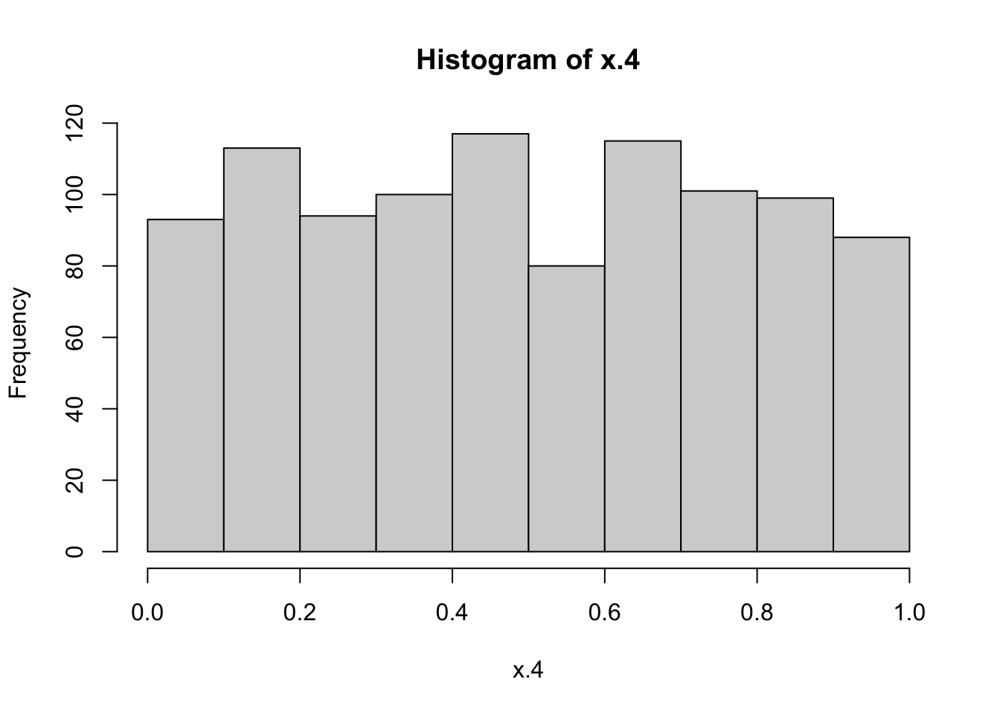
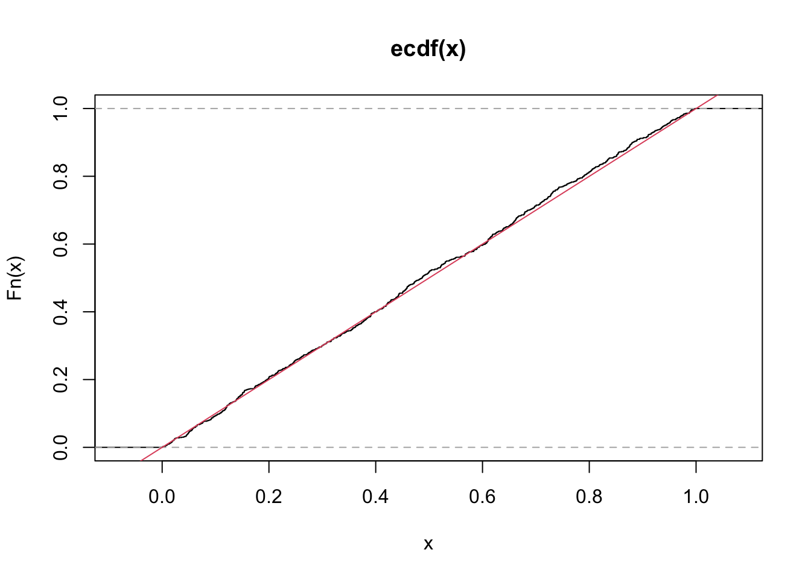
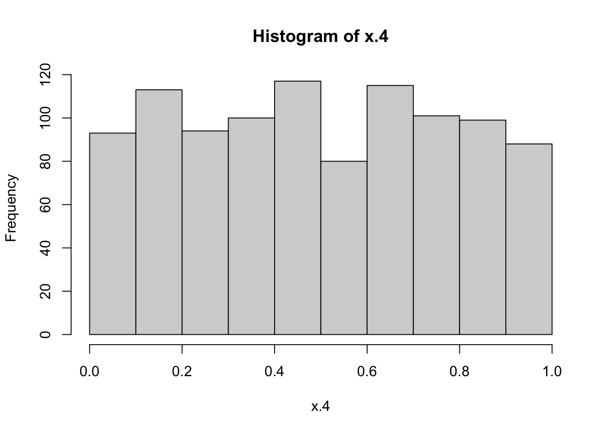
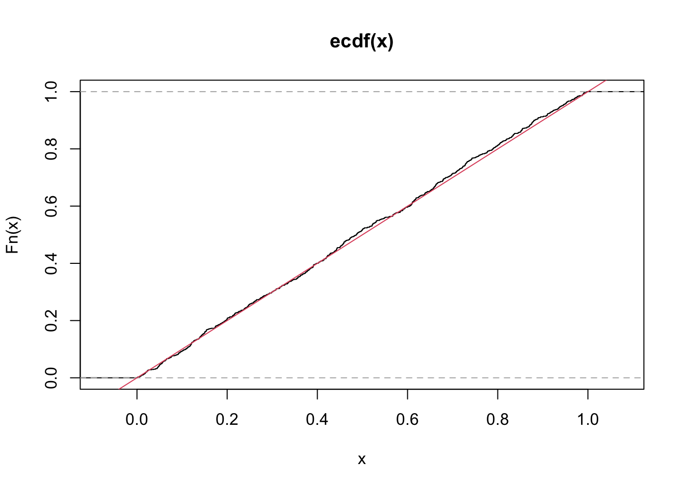
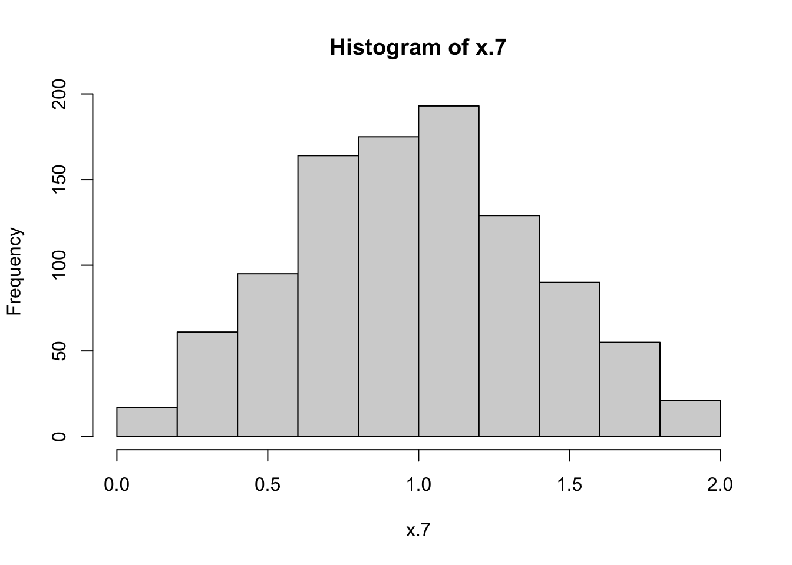
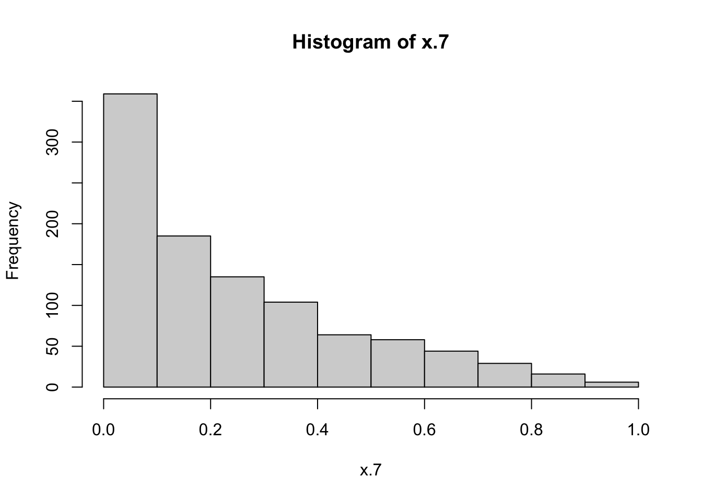
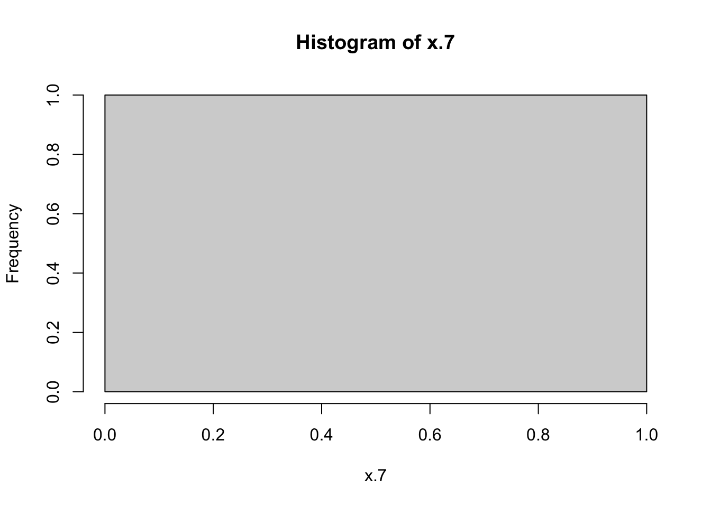
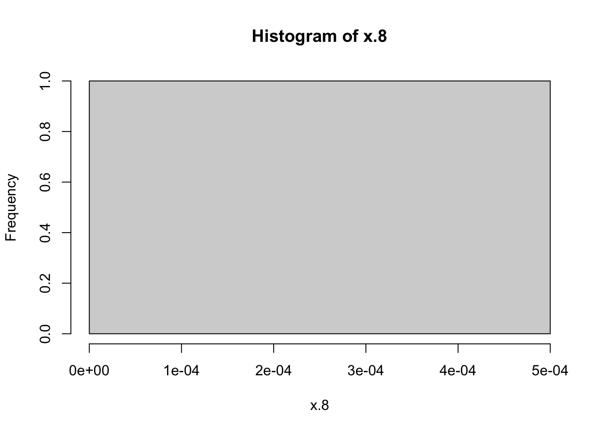
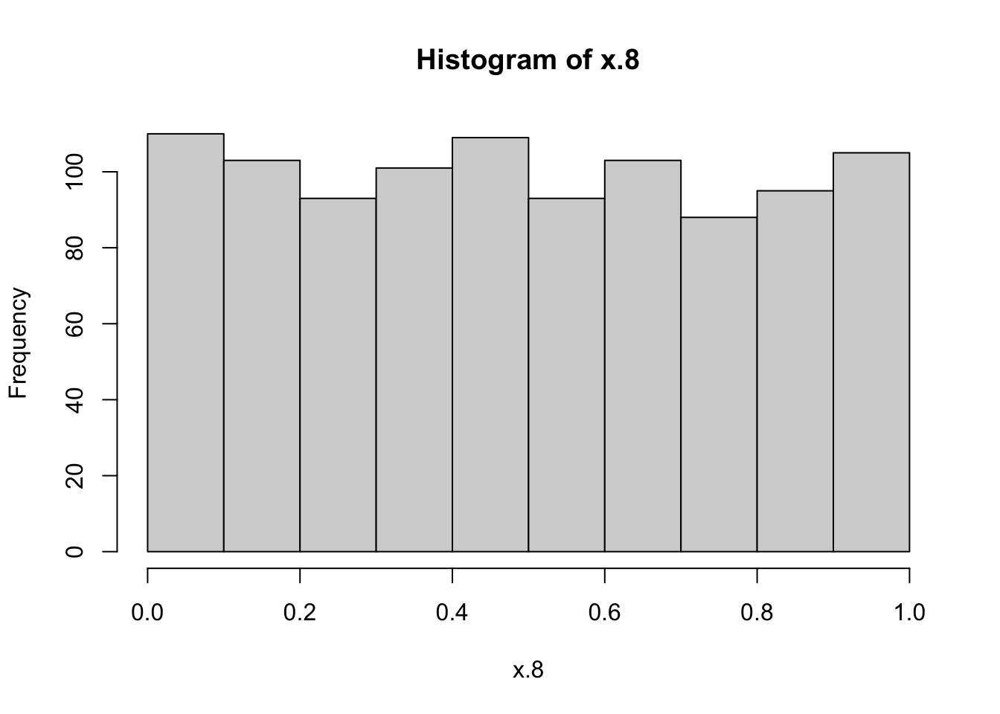

x.4 <- runif(1000)
hist(x.4)
plot.ecdf(x.4)
abline(a=0,b=1, col = 2)
Use simulation to answer the following questions.
Given independent uniform random variables \(X_1 \sim U(a, b)\) and \(X_2 \sim U(a,b)\). (You can use parameters of your choice)
x.4 <- runif(1000)
hist(x.4)
plot.ecdf(x.4)
abline(a=0,b=1, col = 2)
x.5 <- runif(1000)
x.6 <- runif(1000)
x.7 = x.5 + x.6
hist(x.7)
x.5 <- runif(1000)
x.6 <- runif(1000)
x.7 = x.5 * x.6
hist(x.7)
x.5 <- runif(1000)
x.6 <- runif(1000)
x.7 = max(x.5,x.6)
hist(x.7)
x.5 <- runif(1000)
x.6 <- runif(1000)
x.8 = min(x.5,x.6)
hist(x.8)
x.5 <- runif(1000)
x.6 <- runif(1000)
x.8 = 1-x.5
hist(x.8)
Validate the following theorems using simulation. (You can use parameters of your choice)
optional: In addition to the simulation, you can also prove these theorems analytically, i.e. with pen and paper, if you want.
Theorem-5.6.4: If \(X\) has the normal distribution with mean \(\mu\) and variance \(\sigma^2\) and if \(Y=a X+b\), 5.6.4 where \(a\) and \(b\) are given constants and \(a \neq 0\), then \(Y\) has the normal distribution with mean \(a \mu+b\) and variance \(a^2 \sigma^2\).
Theorem-5.6.7: If the random variables \(X_1, \ldots, X_k\) are independent and if \(X_i\) has the normal distribution with mean \(\mu_i\) and variance \(\sigma_i^2(i=1, \ldots, k)\), then the sum \(X_1+\cdots+X_k\) has the normal distribution with mean \(\mu_1+\cdots+\mu_k\) and variance \(\sigma_1^2+\cdots+\sigma_k^2\).
Use the iris data set to check the normality of Sepal width of setosa using the following normality tests (Repeat the steps in the example 3 in lab 4, comment on your results)
Anderson Darling Test
Kolmogorov-Smirnov Test (Comapre to a standard normal distribution)
Exponential Distribution
Given exponentially distributed random variables \(X_1, . . . , X_k\) . Think of waiting times for independent random alarm clocks \(1,...,k\) to go off.
Which of these are again exponentially distributed? Explore with a simulation. (Hint: you can use many methods here to compare the distributions, for example; using Kolmogorov-Smirnov Test, plotting cdfs or ecdfs(as we did in lab 3),..etc )
Distribution of \(min(X_1,\dots,X_k)\)? Waiting time for the first alarm to go off.
Distribution of \(max(X_1, \dots, X_k )\)? Waiting time for the last alarm to go off.
Distribution of \(X_1 + \dots + X_k\) ? Waiting time until Start of the next clock when the previous alarm/s has gone off.